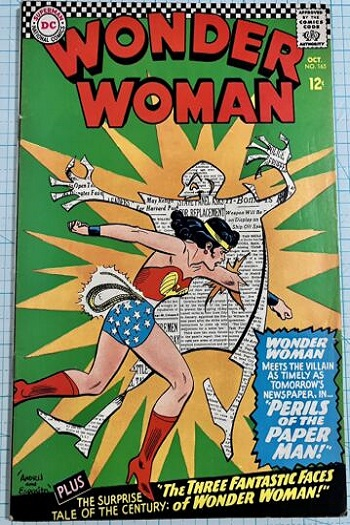

Silver Age
The Silver Age is considered to cover the period from 1956 to 1970, and was succeeded by the Bronze Age.
The popularity and circulation of comic books about superheroes had declined following World War II, and comic books about horror, crime and romance took larger shares of the market. However, controversy arose over alleged links between comic books and juvenile delinquency, focusing in particular on crime, horror, and superheroes. In 1954, publishers implemented the Comics Code Authority to regulate comic content.
In the wake of these changes, publishers began introducing superhero stories again, a change that began with the introduction of a new version of DC Comics' The Flash in Showcase #4 (October 1956). In response to strong demand, DC began publishing more superhero titles including Justice League of America, which prompted Marvel Comics to follow suit beginning with The Fantastic Four #1.
A number of important comics writers and artists contributed to the early part of the era, including writers Stan Lee, Gardner Fox, John Broome, and Robert Kanigher, and artists Curt Swan, Jack Kirby, Gil Kane, Steve Ditko, Mike Sekowsky, Gene Colan, Carmine Infantino, John Buscema, and John Romita Sr. By the end of the Silver Age, a new generation of talent had entered the field, including writers Denny O'Neil, Gary Friedrich, Roy Thomas, and Archie Goodwin, and artists such as Neal Adams, Herb Trimpe, Jim Steranko, and Barry Windsor.
